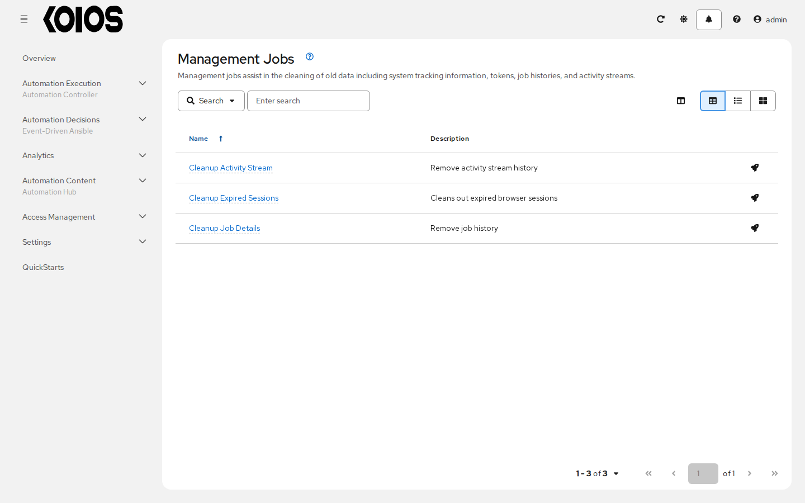
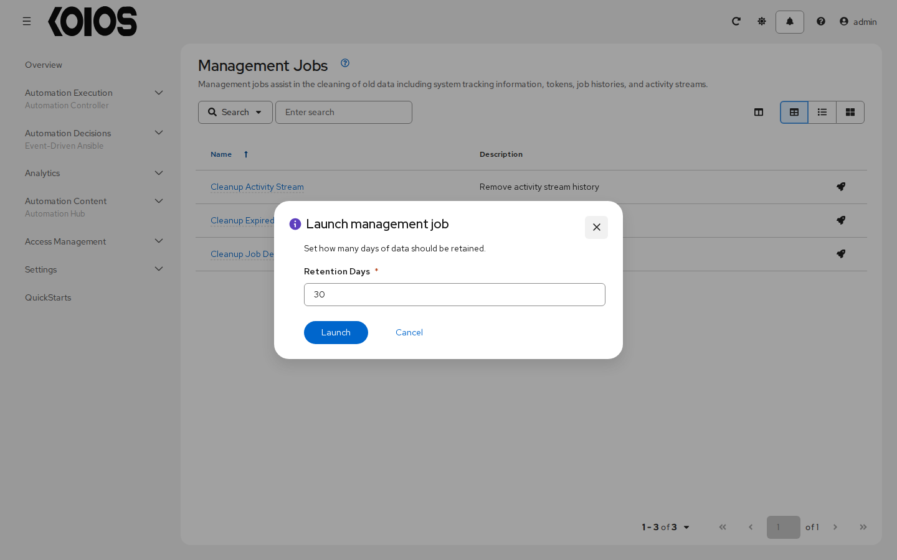
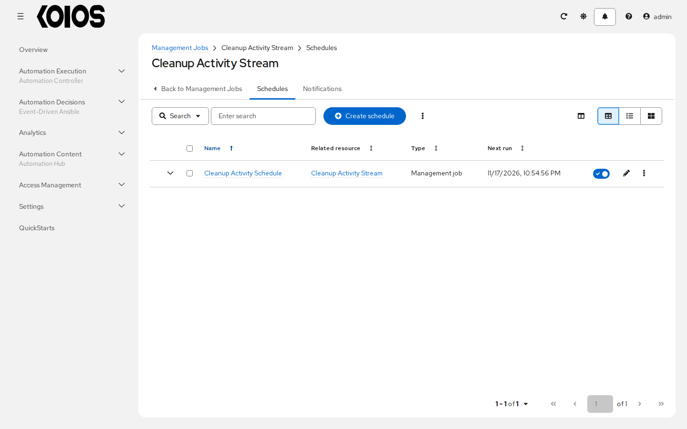
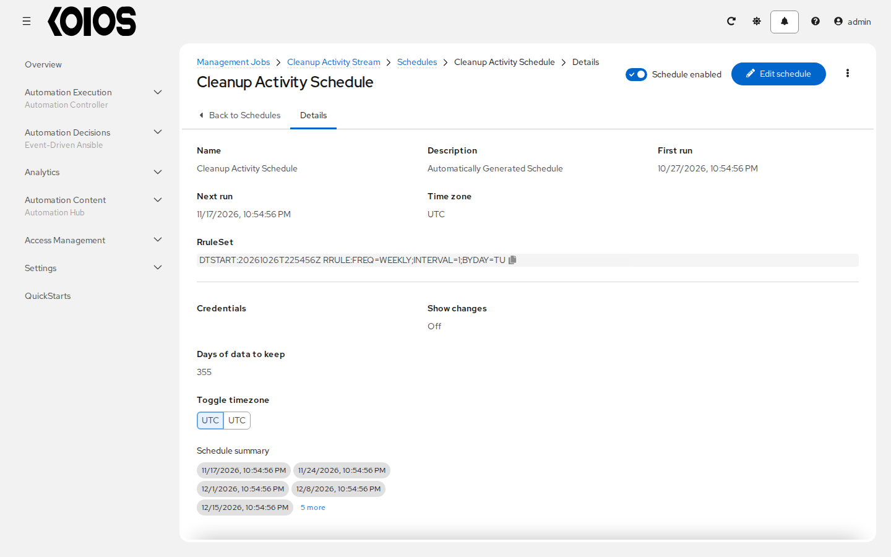
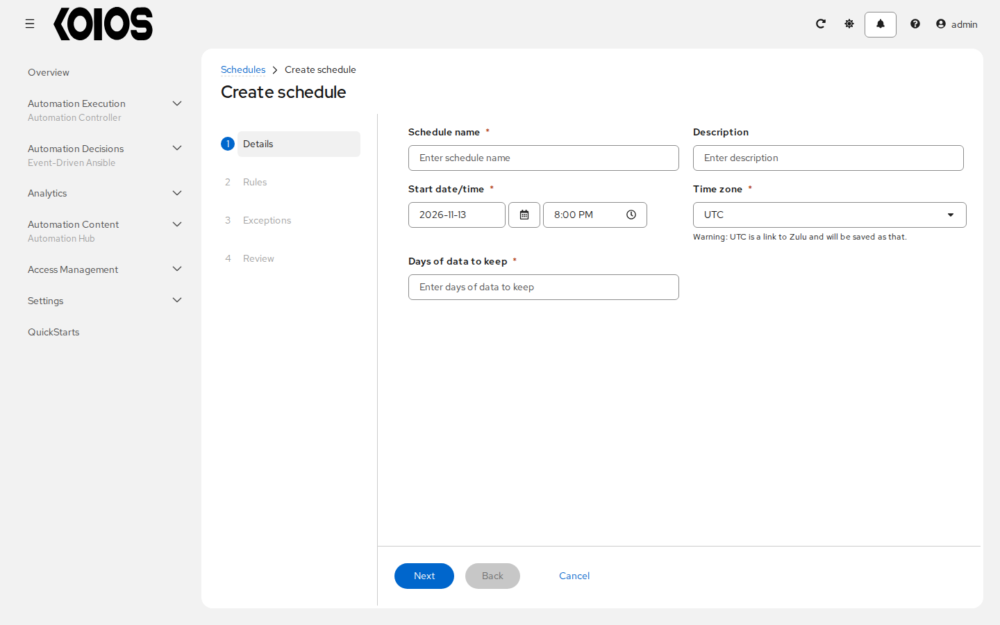
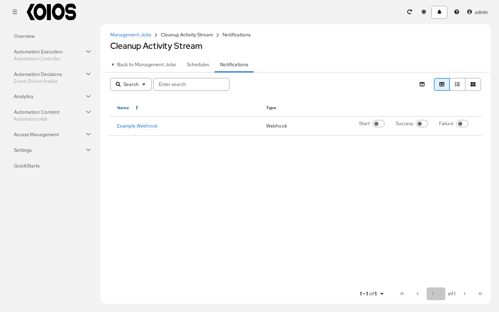

6. Management Jobs
Management Jobs assist in the cleaning of old data from automation controller: job histories, activity streams and expired sessions. You can use them if you have specific retention policies or need to decrease the storage used by the automation controller database. Open Automation Execution > Administration > Management Jobs (system administrators only).

Three management jobs are available for you to schedule and launch:
Cleanup Activity Stream: Remove activity stream history older than a specified number of days
Cleanup Expired Sessions: Remove the expired sessions of automation controller from its database
Cleanup Job Details: Remove job history older than a specified number of days
Note
Automation controller in Koios Automation Platform has no Cleanup Expired OAuth2 Tokens job: tokens are created and managed by the platform gateway (see API tokens and OAuth applications), and user sessions too (see Sessions and passwords).
Each management job has a Launch management job action (rocket icon) in its row, and opens with its Schedules and, when your permissions allow it, Notifications tabs.
6.1. Removing Old Activity Stream Data
To remove older activity stream data, click Launch management job (rocket icon) in the row of Cleanup Activity Stream.

Enter in Retention Days the number of days of data you would like to keep and click Launch.
6.1.1. Scheduling
Each management job has a default schedule, created by automation controller. To review or set a schedule for purging data:
Click the name of the management job and open its Schedules tab. The switch of each schedule enables or disables it.

Click the name of the schedule, in this example “Cleanup Activity Schedule”, to review its settings, such as the rules, the time zone, the Days of data to keep and the next runs, and click Edit schedule to modify them.

To add a schedule, click Create schedule. In the Details step enter the Schedule name (required), an optional Description, the Start date/time and Time zone (required) and the Days of data to keep (required); then set the recurrence in Rules, any Exceptions, and check the Review step before saving. See Schedules for detail on rules and exceptions.

The schedule keeps its time zone: a schedule that runs at a time of day in a time zone with daylight saving time keeps that local time, and its time in UTC changes when daylight saving time starts or ends.
6.1.2. Notifications
To review or set notifications associated with a management job, open its Notifications tab and use the Start, Success and Failure toggles of each notifier.

If no notifiers exist, see Notifications for more information.
6.2. Cleanup Expired Sessions
To remove the expired sessions stored by automation controller, click Launch management job in the row of Cleanup Expired Sessions. The sessions of the users of the platform belong to the platform gateway (see Sessions and passwords).
You can review or set a schedule for cleaning up expired sessions by performing the same procedure described for activity stream management jobs. See Scheduling for detail.
You can also set or review notifications associated with this management job the same way as described in Notifications for activity stream management jobs, and refer to Notifications for more detail.
6.3. Removing Old Job History
To remove job history older than a specified number of days, click Launch management job in the row of Cleanup Job Details, enter the Retention Days you would like to keep and click Launch. It removes the playbook runs, ad hoc commands, project and inventory updates, workflow jobs, management jobs and notifications older than that, except the jobs that are still pending, waiting or running. This includes the last update of a project or an inventory source when it is older than that.
You can review or set a schedule for cleaning up old job history by performing the same procedure described for activity stream management jobs. See Scheduling for detail.
You can also set or review notifications associated with this management job the same way as described in Notifications for activity stream management jobs, and refer to Notifications for more detail.